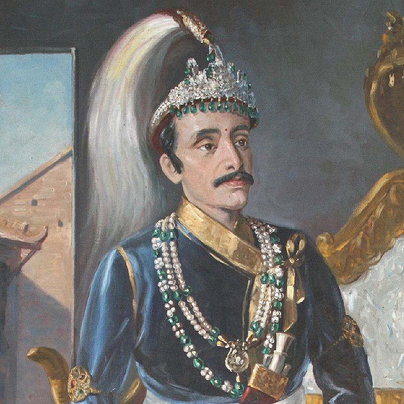

Surendra Bikram Shah Dev
Biography:
Surendra Bikram Shah Dev was born on October 20, 1829 in Kathmandu Durbar Square, Nepal.
He was the son of Rajendra Bikram Shah Dev and Samrajya Lakshmi Devi.
He was the sixth King of Kingdom of Nepal from 12 May, 1847 to 17 May, 1881.
He died at the age of 51 on 17 May, 1881 in Basantapur, Nepal.